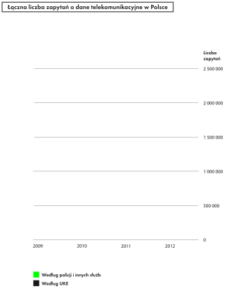
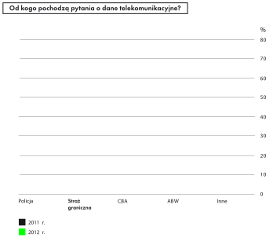
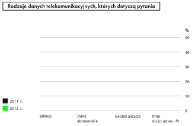

W poprzednim rozdziale opisaliśmy, jakie założenia obowiązkowej retencji danych
zostały przyjęte w Unii Europejskiej. Jednak aby polski policjant mógł wykorzystywać
dane telekomunikacyjne, nie wystarczą przepisy unijne – niezbędne było ich wdrożenie
do polskiego prawa. Zrobiono to w sposób, który premiował wygodę działania
policji i innych służb kosztem naszej prywatności. Teraz przyjrzymy się praktyce
sięgania po dane telekomunikacyjne i związanym z tym zagrożeniom.
„Regulacja, która w zamyśle miała ułatwić ściganie poważnych
przestępstw, poprzez błędną implementację do polskiego porządku prawnego, umożliwia stałe śledzenie każdego z nas”.
Wojciech Wiewiórowski, Generalny Inspektor Ochrony Danych Osobowych
Wojna z terroryzmem po polsku
Polska wdrożyła dyrektywę retencyjną w 2009 r., nowelizując prawo telekomunikacyjne.
Atmosferę, w jakiej wdrożono w Polsce obowiązek zatrzymywania danych
o wszystkich użytkownikach sieci telekomunikacyjnych, doskonale oddaje oficjalne
uzasadnienie tej nowelizacji: „Polska jest lub może być wykorzystywana jako zaplecze
logistyczne lub punkt tranzytowy dla ugrupowań terrorystycznych. Z uwagi na
położenie geograficzne Polski, na szlakach wschód–zachód i północ–południe,
istnieje bardzo duże prawdopodobieństwo wykorzystania terytorium naszego
państwa właśnie w ten sposób”.
Drugi z oficjalnych powodów nawiązywał do obecności polskich żołnierzy
w Afganistanie, która miała się wiązać z ryzykiem stworzenia nowego szlaku przemytu
heroiny przez terytorium Polski: „W sytuacji uczestnictwa polskich żołnierzy
w przemycie narkotyków mogłaby zostać zagrożona sojusznicza wiarygodność Polski.
Polscy żołnierze pomagaliby bowiem pośrednio, nie wiedząc o tym, finansować
działalność al-Kaidy oraz talibów”.
W najgorętszym okresie „wojny z terroryzmem” takie argumenty padały na
podatny grunt. Jednak z perspektywy kilku lat trudno zgodzić się, by ryzyko przestępczej
działalności wąskiej grupy żołnierzy przebywających w Afganistanie było
dobrym uzasadnieniem dla ograniczenia praw i wolności obywateli 38-milionowego
państwa.
Retencyjna wolna amerykanka
Z raportu Komisji Europejskiej oceniającego funkcjonowanie dyrektywy retencyjnej
wynika, że z dostępnych możliwości Polska wybrała rozwiązanie najmniej korzystne
z punktu widzenia ochrony praw i wolności obywateli. Wprowadzono najdłuższy,
2-letni (skrócony w 2013 r. do 12 miesięcy), okres retencji przewidziany dyrektywą,
przy jednoczesnym braku zewnętrznej kontroli nad tym, kto i w jakim celu sięga
po dane telekomunikacyjne. W porównaniu z dyrektywą polskie prawo poszerzyło
też wachlarz celów, w jakich te dane mogą być wykorzystywane: z poważnych przestępstw
na wszystkie przestępstwa, a nawet wykroczenia i działania prewencyjne.
Prawo telekomunikacyjne nakłada obowiązek retencji danych na operatorów;
natomiast konkretne zasady, na jakich poszczególne organy uzyskują dostęp do
tych danych, regulują tzw. ustawy kompetencyjne (czyli przepisy określające zasady
ich działania). Prawo dostępu do danych telekomunikacyjnych mają w Polsce sądy,
prokuratura, policja i inne (liczne!) służby: Centralne Biuro Antykorupcyjne,
Agencja Bezpieczeństwa Wewnętrznego, Straż Graniczna, Żandarmeria Wojskowa,
Służba Kontrwywiadu Wojskowego, kontrola skarbowa i Służba Celna.
Jeśli bazy danych telekomunikacyjnych porównać do domu, to dostać się do nich można różnymi drogami: przez drzwi frontowe, tylne wejście lub okna.
Od frontu do domu wchodzą sądy i prokuratorzy prowadzący postępowanie karne.
Muszą oni wydać specjalne postanowienie, o którym informowana jest osoba, której
dane są pobierane. Co prawda doręczenie tego postanowienia można odroczyć, ale
właściciel telefonu czy komputera prędzej czy później dowie się, że był obiektem
zainteresowania prokuratora lub sądu.
Z okien próbują korzystać sądy cywilne i np. prywatni detektywi, którzy nadużywają
prawa lub wprost je łamią, sięgając po billingi mimo braku odpowiednich
podstaw. Najwyższa Izba Kontroli, która sprawdziła, jak w praktyce wykorzystywane
są dane telekomunikacyjne, spotkała się z przypadkami żądania przez sądy billingów
w sprawach rozwodowych bez uzyskania koniecznej w takim wypadku zgody abonenta.
Ani prawo telekomunikacyjne, ani przepisy kodeksu postępowania cywilnego nie
dają podstaw do wydania przez sąd w sprawie cywilnej postanowienia dowodowego
obligującego operatora do przetworzenia i przekazania temu sądowi danych objętych
tajemnicą telekomunikacyjną. Zdarza się nawet, że na operatorów, którzy w takiej
sytuacji nie dostarczyli sądowi billingów, nakładane są grzywny za niewykonanie
polecenia sądu.
Największy problem stanowią tylne drzwi: są otwarte na oścież, a policja i inne służby korzystają z nich bez żadnej kontroli – tak często, jak same uznają za
stosowne. Wbrew intencjom twórców dyrektywy retencyjnej umożliwiają one dostęp
do danych nie tylko w celu wykrywania poważnych przestępstw, ale też w drobnych
sprawach lub w ogóle bez prowadzonego postępowania, np. w „celach analitycznych”.
Policja i służby nie muszą też informować o pobraniu danych osoby, której to dotyczy.
Z raportu Komisji Europejskiej wynika, że tylko w Polsce, na Słowacji i na Łotwie można sięgać po dane telekomunikacyjne bez jakiejkolwiek kontroli – sądu, prokuratora
lub niezależnego organu administracyjnego. Dla kontrastu: niemieckie służby
mogą pozyskiwać dane telekomunikacyjne tylko w drodze nakazu sądowego, którego
ważność jest ograniczona do 3 miesięcy. W uzasadnionych przypadkach nakaz może
zostać wydłużony o kolejne 3 miesiące.
Z bazy operatora na biurko funkcjonariusza
W praktyce jest kilka dróg, którymi dane telekomunikacyjne mogą trafić z bazy
danych prowadzonej przez operatora na biurko policjanta. Mogą być przekazane na
pisemny wniosek komendanta głównego policji, ustne żądanie uprawnionego funkcjonariusza
lub za pośrednictwem zabezpieczonego połączenia internetowego między
policją a konkretnym operatorem (tj. za pomocą specjalnego interfejsu). Znakomita
większość danych przepływa tą ostatnią drogą: szybko, sprawnie, bez zbędnej papierowej
korespondencji. Uprawnieni do tego funkcjonariusze pobierają dane bezpośrednio
z baz danych operatorów, nawet bez czynnego udziału tych ostatnich.
Systemy informatyczne mogą być zbudowane tak, że po stronie operatora nie zostaje nawet ślad po tym, że dane zostały pobrane. Uprawnienia do korzystania
z interfejsu i innych dróg pozyskiwania danych o obywatelach każdy organ określa
w swoich wewnętrznych przepisach. W przypadku policji dostęp do danych ma
ok. 500 funkcjonariuszy, w tym ok. 200 pracowników Centralnego Biura Śledczego.
W Stanach Zjednoczonych każdy operator zatrudnia do obsługi zapytań o dane telekomunikacyjne specjalny zespół prawników...
, techników od obróbki danych i specjalistów od sieci komórkowych, który czeka w gotowości do rozpatrzenia i przygotowania odpowiedzi na setki zapytań, składanych codziennie przez amerykańskie organy ścigania. W Polsce ten wysiłek organizacyjny jest ograniczony do minimum: funkcjonariusze przez specjalny interfejs pobierają dane bezpośrednio z systemu operatora, który nie bierze w tym czynnego udziału.
Skala sięgania po dane: wielka niewiadoma
Nikt w Polsce nie jest w stanie policzyć, ile zapytań o dane obywateli służby i inne uprawnione organy kierują do operatorów. Nie była tego w stanie ustalić nawet Najwyższa Izba Kontroli.
Łatwy dostęp służb do danych telekomunikacyjnych – bez kontroli sądu, bez ponoszenia kosztów i bez konieczności informowania sprawdzanego – znajduje odbicie
w skali korzystania z danych telekomunikacyjnych przez polskie służby, która jest
wielokrotnie większa niż w innych krajach europejskich. Choć to, co stoi za tymi
„imponującymi” liczbami, wciąż jest w dużym stopniu zagadką.
Co roku Urząd Komunikacji Elektronicznej publikuje informacje pokazujące
skalę zapytań o dane telekomunikacyjne, jakie operatorzy otrzymują od sądów,
prokuratury, policji i innych służb. W kwietniu 2010 r. polską opinię publiczną
poruszyła wiadomość o „milionie billingów” – UKE podał wtedy informację,
że operatorzy telekomunikacyjni w 2009 r. otrzymali od uprawnionych podmiotów
ponad milion zapytań o dane telekomunikacyjne. W kolejnym roku ta liczba wyniosła
ponad 1,3 mln. W 2011 r. wszyscy uprawnieni sięgali po dane telekomunikacyjne
ponad 1,87 mln razy, zaś w 2012 r. – 1,72 mln.
W ostatnich latach liczba żądań danych telekomunikacyjnych wzrosła, chociaż w tym samym okresie nie stwierdzono...
równie dynamicznego przyrostu poważnych przestępstw w Polsce. Wzrost liczby zapytań nie wpłynął również na poprawę wykrywalności przestępstw.
Tymczasem policja i inne służby (bez sądów, prokuratury i Służby Kontrwywiadu
Wojskowego) zapytane przez Fundację Panoptykon „przyznają się” do znacznie
większej liczby zapytań: ponad 1,92 mln w 2011 r. i 2,13 mln w 2012 r. Jak wyjaśnić
różnice między danymi przekazywanymi przez UKE i same służby – nie wiadomo.
Wiadomo tylko tyle, że w Polsce wciąż brakuje rzetelnego źródła danych na temat
zapytań o dane telekomunikacyjne. Ten wniosek potwierdził raport Najwyżej Izby
Kontroli z czerwca 2013 r. Same liczby nie pozwalają na rzetelną ocenę skali ingerencji
służb w naszą prywatność. Do tego konieczna byłaby przynajmniej informacja,
co oznacza „zapytanie”, które każdy z pytających organów i odpowiadających operatorów
definiuje inaczej.
Z raportu Komisji Europejskiej oceniającego funkcjonowanie dyrektywy retencyjnej wynika, że w Niemczech służby sięgają po dane telekomunikacyjne aż 35-krotnie
rzadziej niż w Polsce. Według polskiego MSW nie można jednak porównywać tych
danych, ponieważ nie wiadomo, w jaki sposób w inne państwa liczą swoje „sprawdzenia
telekomunikacyjne”.
Przedstawiciele służb podają liczne argumenty uzasadniające tak wysoką liczbę zapytań – chociażby konieczność kierowania każdego zapytania do czterech największych
operatorów, ponieważ nigdy nie wiadomo, u którego z nich zarejestrowany jest dany
numer.
Według szefa CBA Pawła Wojtunika rośnie liczba zapytań, ale nie liczba pozyskiwanych danych. Szef CBA przyczyn tego (pozornego?) wzrostu ingerencji w prywatność
obywateli upatruje w tym, że w Polsce można anonimowo kupić kartę pre-paid. Jego
zdaniem przestępcy wykorzystują karty jednorazowo, co utrudnia ustalenie ich tożsamości
i zmusza służby do sięgnięcia po więcej danych telekomunikacyjnych. Dlatego,
wzorując się na rozwiązaniu funkcjonującym m.in. w Niemczech, CBA postuluje
wprowadzenie obowiązku rejestracji kart pre-paid. Pozostaje jednak pytanie, czy taka
propozycja jeszcze bardziej nie narusza prawa do prywatności.


Nie ma w Polsce ośrodka, który dysponowałby kompletnymi i w 100% rzetelnymi danymi o skali zapytań, jakie służby i inne uprawnione organy kierują do operatorów.
Dane publikowane przez UKE są opracowane na podstawie informacji przekazywanych
przez operatorów telekomunikacyjnych. Jednak według UKE nie wszyscy
operatorzy realizują ten obowiązek.
Dane zebrane przez Fundację Panoptykon obejmują zapytania policji, Straży
Granicznej, ABW, CBA, Żandarmerii Wojskowej, kontroli skarbowej i Służby Celnej,
nie zawierają natomiast zapytań Służby Kontrwywiadu Wojskowego (nie udostępniła
danych), sądów i prokuratury.


Fundacji Panoptykon udało się ustalić, po jakiego rodzaju dane telekomunikacyjne służby sięgają najczęściej. Z informacji zebranych od policji i innych służb
wynika, że najbardziej interesują je tzw. dane abonenckie, czyli wszystkie dane, które
podajemy operatorom przy okazji podpisywania umowy. Poza imieniem i nazwiskiem
wśród tych danych może się znaleźć adres, PESEL czy numer konta. Tuż za danymi
abonenckimi plasują się billingi, czyli wykazy połączeń, dzięki którym można ustalić,
z kim i jak często się kontaktujemy. Znacznie rzadziej policja i inne służby pytają
o dane geolokalizacyjne, czyli położenie telefonu w określonym czasie. Prawdopodobnie
do tej kategorii zaliczają się również tzw. zrzuty z BTS, czyli informacje o wszystkich
użytkownikach znajdujących się w określonym momencie w zasięgu danej stacji
bazowej.


Przegląd dostępnych liczb na temat skali sięgania przez policję i inne służby po nasze dane telekomunikacyjne nie pozwala na wyciągnięcie prostych wniosków. Tak naprawdę
nie wiemy, jak często wykorzystywany jest ten instrument, ilu osób dotyczy
i jak często bywa nadużywany.
Nadużycia
Sytuacja, w której służby nie muszą nikogo pytać o zgodę i pobierają dane telekomunikacyjne wtedy, gdy jest im wygodnie, stwarza duże ryzyko nadużyć.
Nie wiadomo, co dzieje się z danymi wydobywanymi przez różne służby do „celów
analitycznych”. Ministerstwo Sprawiedliwości nie prowadzi statystyk w zakresie
korzystania przez sądy i prokuratury z danych telekomunikacyjnych. Tylne drzwi,
otwarte dla policji i służb, mogą być wykorzystywane w celach nieprzewidzianych
dyrektywą retencyjną ani polskim prawem – w sposób, którego nie kontroluje ani
wymiar sprawiedliwości, ani tym bardziej opinia publiczna.
Najgłośniejsze sprawy, w których bezprawnie pozyskiwano dane telekomunikacyjne, dotyczyły dziennikarzy. Okazało się chociażby, że w latach 2005–2007
ABW, CBA i policja zbierały dane na temat rozmów telefonicznych co najmniej
dziesięciorga dziennikarzy. Obie służby zaprzeczyły, ale prokurator uzyskał z systemu
operatora potwierdzenie złożenia zapytań przez CBA i ABW. W maju 2010 r. śledztwo
w tej sprawie umorzono „z powodu niewykrycia przestępstwa”.
W procesie o naruszenie dóbr osobistych, który Centralnemu Biuru Antykorupcyjnemu wytoczył Bogdan Wróblewski, dziennikarz „Gazety Wyborczej”, sąd określił
działanie CBA jako „typowe inwigilowanie w niewiadomym celu”. Prawdopodobnie
funkcjonariusze próbowali dowiedzieć się, kto informował Wróblewskiego o nieprawidłowościach w CBA. O tym, że CBA zagląda do jego billingów, Bogdan Wróblewski dowiedział się przez przypadek. W zakończonym w 2013 r. procesie sąd nakazał CBA publikację przeprosin.
Konieczne zmiany w prawie
„Wygoda działania służb, a nie względy konieczności, decydują
o ingerencji w konstytucyjną wolność i ochronę tajemnicy komunikowania
się”. Irena Lipowicz, Rzecznik Praw Obywatelskich
Polskie przepisy regulujące obowiązkową retencję danych telekomunikacyjnych trzeba zmienić – co do tego zgadzają się nie tylko organizacje pozarządowe, Rzecznik Praw
Obywatelskich i Generalny Inspektor Ochrony Danych Osobowych, ale także Prokurator
Generalny, Minister Administracji i Cyfryzacji, a nawet – przynajmniej w wystąpieniach
medialnych – Minister Spraw Wewnętrznych.
W 2011 r. specjalny rządowy zespół pod kierownictwem ministra Jacka
Cichockiego opublikował Raport dotyczący retencji danych telekomunikacyjnych.
Z dość zachowawczych zapowiedzi zmian zawartych w raporcie – wprowadzenia obowiązku niszczenia danych, zwiększenia nadzoru prokuratury, powołania specjalnego
organu nadzorującego działalność służb oraz skrócenia okresu retencji do
roku – udało się zrealizować tylko tę ostatnią. Pomimo przygotowania pod koniec
2013 r. przez Ministerstwo Spraw Wewnętrznych projektu ustawy o Komisji Kontroli
Służb Specjalnych najważniejsze problemy – brak zewnętrznej kontroli nad sięganiem
po dane oraz możliwość robienia tego w nawet najbardziej błahych sprawach – wciąż
czekają na rozwiązanie.
„Jesteśmy już na tyle dojrzałą demokracją, aby można było rozważyć stworzenie instytucjonalnych mechanizmów kontroli zewnętrznej najbardziej wrażliwej aspektów pracy służb specjalnych”. Rządowy Raport dotyczący retencji danych telekomunikacyjnych
Rzecznik Praw Obywatelskich zakwestionowała zgodność polskich przepisów
dotyczących retencji z konstytucją. Jej wniosek do Trybunału Konstytucyjnego
z 1 sierpnia 2011 r. został poparty przez Prokuratora Generalnego i Marszałek Sejmu.
Na razie nie został on jednak rozpatrzony.
Dane telekomunikacyjne – mimo że nie zawierają treści rozmowy – są objęte tajemnicą komunikowania się...
Może być ona ograniczona tylko w przypadkach ściśle określonych przez ustawę i tylko wtedy, gdy jest to niezbędne do zapewnienia porządku i bezpieczeństwa publicznego. Zdaniem Rzecznik Praw Obywatelskich polskie przepisy naruszają konstytucję, ponieważ:
pozwalają na arbitralne sięganie przez policję i inne służby po dane bez konieczności uzyskiwania zgody sądu lub innego zewnętrznego organu kontrolnego;
nie nakładają obowiązku określenia, czy nie da się osiągnąć tych samych celów w sposób mniej ingerujący w prywatność;
nie zawierają gwarancji ochrony tajemnic: lekarskiej, adwokackiej czy dziennikarskiej;
w przypadku niektórych służb (np. ABW i CBA) nie nakładają obowiązku niszczenia danych, nawet jeśli nie są już one potrzebne.
Konieczność zmian i ograniczenia dowolności, z jaką polskie służby sięgają po
dane telekomunikacyjne, potwierdziła też Najwyższa Izba Kontroli, która skontrolowała
tę kwestię. NIK negatywnie oceniła m.in. to, że jedynym podmiotem oceniającym
zasadność sięgnięcia po dane telekomunikacyjne jest… sam podmiot pobierający
dane.